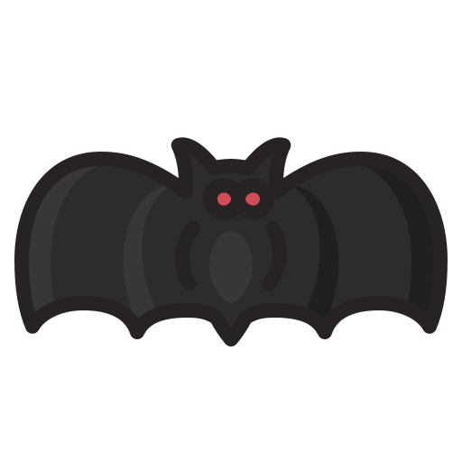
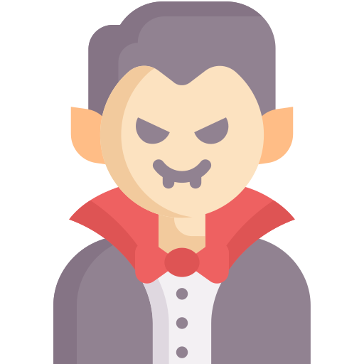

Who is Dracula?
Dracula's a name practically everyone's heard, but who actually is he?
Dracula is a character in the Gothic novel "Dracula" written by Bram Stoker and published in 1897. Interestingly, Dracula is the antagonist of the novel, not the protagonist. The novel focuses on a cast of characters, including, but not limited to, Jonathan Harker, a lawyer, Mina Murray, his fiancé, Lucy Westenra, Mina's best friend, Van Helsing, a Dutch professor, and of course Count Dracula. Dracula in the novel aims to move from Transylvania to London, and expand his power by creating more vampires. Throughout the novel, Dracula attacks the other characters in the novel, and manages to turn Lucy into a vampire. Unlike modern interpretations, Dracula is an evil being in the novel, attacking and hurting the innocent women characters. Dracula is eventually destroyed at the end of the novel.
Dracula in Modern Times
How is Dracula known today?
The influence of Dracula on vampire stories and legends cannot be understated. Dracula played a crucial role in popularizing the vampire trope and influenced many of the modern interpretations of vampires that people have today. Several adaptations of Dracula have been inspired by the original novel, furthering Dracula's legacy. Even Sesame Street, a popular children's show made a character based off of Dracula, named Count von Count, who counts everything around him. Today, the name Dracula is practically synonymous with the term vampire. Most vampire designs are based off of Dracula, and people often dress up as Dracula for Halloween. In this way, Dracula is an influential fictional character, much like Sherlock Holmes or Robin Hood. He is instantly recognizable, has numerous adaptations and interpretations, and is usually what first comes to mind when a person thinks of a vampire. In many ways, Dracula is responsible for the modern vampire tropes people know today.
